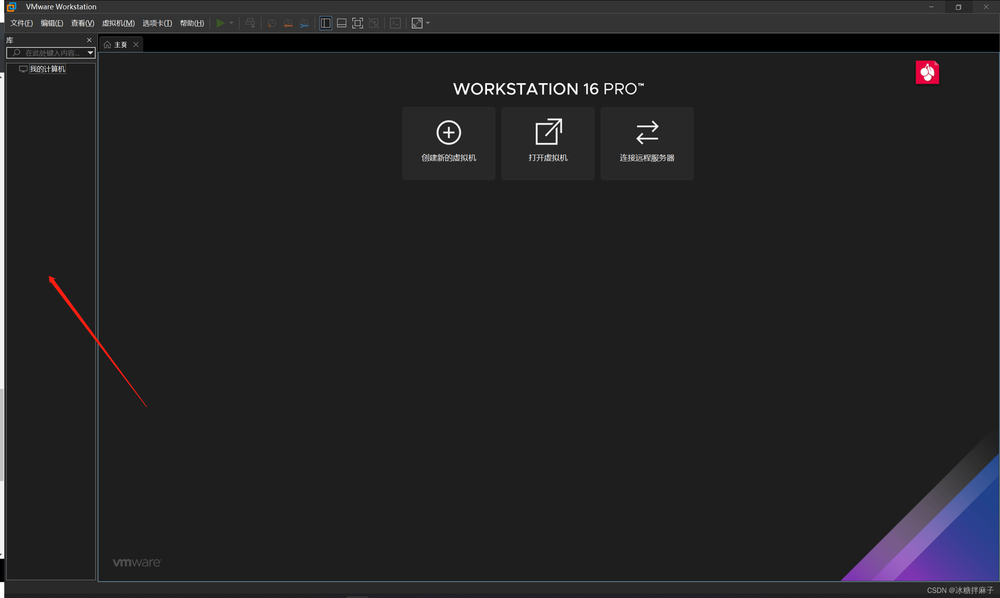
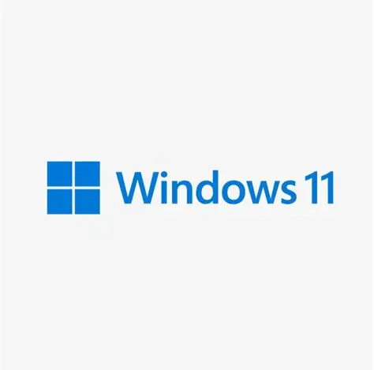
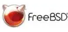

什么是虚拟机？
虚拟机(VM)是通过软件模拟的完整计算机系统。它允许您在一台物理计算机上运行多个操作系统，每个操作系统都在自己的隔离环境中运行。
使用虚拟机，您可以：
- 在同一台电脑上运行Windows、Linux和macOS
- 安全地测试软件和操作系统
- 创建开发和测试环境
- 运行不兼容当前系统的应用程序
为什么使用虚拟机？
虚拟机技术提供了许多优势：
- 安全性：在隔离环境中测试可疑软件
- 成本效益：减少硬件投资，最大化资源利用
- 灵活性：轻松创建、备份和恢复系统环境
- 兼容性：运行专为其他操作系统设计的应用程序
- 教育价值：学习不同操作系统无需额外硬件
系统要求
在安装虚拟机前，请确保您的计算机满足以下最低要求：
CPU
64位双核处理器
(推荐四核或更高)
内存
8GB RAM
(推荐16GB或更高)
存储
20GB可用空间
(SSD推荐)
安装步骤
按照以下步骤安装和配置您的第一个虚拟机：
注意：这里使用VMware 16来演示，不同版本之间可能纯在差异！
1
2
下载VMware
按图片里的步骤

- 点击"login"（这一步是为了免得待会儿还要登陆）
- 登陆你的账号，如果没有请注册一个。
- 登陆成功后，回到刚才的网页，点击"DOWNLOAD FUSION OR WORKSTATION"。
- 如果你有选择困难症那就选最新款好了
注意：
- VMware是不需要付钱的
- 官网下载数度比较慢但还请耐心等待，请不要使用第三方网站下载，那可能是盗版的。（作者就差点被坑）
3
安装虚拟机软件
运行下载的安装程序并按照提示完成安装。安装过程通常很简单：
- 点击“下一步”
- 如果出现了这个界面，说明你已经有VMware了。
- 建议更改一下安装位置，以防C盘爆掉......
- 如果你已经做到了这一步，VMware可能会找你要密钥，输入就是了，如果你没有也有一定试用期,可正常使用。


注意：在安装过程中，您可能会看到有关网络接口和设备驱动的警告，这些是正常现象，请允许安装。
4
创建新的虚拟机
打开虚拟机软件并创建新虚拟机：
- 在左侧空白部分右键单击，选择“新建” 
- 这里询问用什么配置选推荐的就好啦
- 接下来他询问光盘映像文件，这个我会在下一部分讲到。
- 给虚拟机命名选择位置等根据自身情况去填。（虚拟机位置建议放到空闲的磁盘里，否则磁盘可能会boom）
- 根据自身需求设置磁盘大小（不要低于您装的系统要求的最低值）
- 在根据自身情况和需求设置其他配置

提示：动态分配的虚拟硬盘最初很小，会随着使用而增长，节省磁盘空间。
警告：内存大小最好不要设置的超过实体内存的3/4以免发生内存交换。
5
下载操作系统镜像
选择您想在虚拟机中安装的操作系统。以下是一些常见选择：


Windows 11
最流行的桌面操作系统

FreeBSD
稳定可靠的类Unix系统
提示：本网站尚未完全完善，大家多多指教，如果有好建议或资源，联系我们：邮件
6
安装操作系统
启动新创建的虚拟机并安装操作系统：
- 选择之前下载的操作系统ISO镜像
- 启动虚拟机，安装程序将自动加载
- 按照屏幕提示完成操作系统安装
- 安装完成后，安装虚拟机增强功能/工具
注意：虚拟机增强功能提供更好的性能、鼠标集成和共享文件夹功能。（比如VMware_Tools，但部分操作系统可能不支持）
我的电脑需要什么配置才能流畅运行虚拟机？
建议配置：
- CPU：四核处理器（支持虚拟化技术）
- 内存：16GB RAM（为虚拟机分配4-8GB）
- 存储：SSD硬盘，至少50GB可用空间
- 显卡：集成显卡足够，但游戏或图形工作需专用显卡
我可以在虚拟机中玩游戏吗？
简单的2D游戏和旧游戏可能可以运行，但现代3D游戏在虚拟机中性能不佳。虚拟机不是为高性能游戏设计的，因为存在图形和硬件访问限制。对于游戏，建议使用双系统启动或云游戏方案。
虚拟机中的网络如何工作？
虚拟机软件提供多种网络模式：
- NAT：虚拟机共享主机的IP地址（默认模式）
- 桥接：虚拟机像独立设备一样在网络上可见
- 仅主机：虚拟机只能与主机通信
- 自定义特定网络：虚拟机之间可以通信，但无法访问外部网络